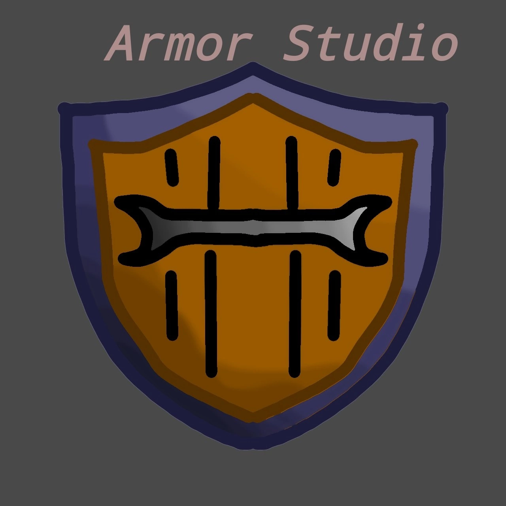

<!DOCTYPE html>
<html lang="en">
<head>
    <meta charset="UTF-8">
    <meta name="viewport" content="width=device-width, initial-scale=1.0">
    <!-- Favicon -->
    <link rel="icon" href="favicon.ico" type="image/x-icon">
</head>
<body>
    <!-- Your content here -->
</body>
</html>

<!DOCTYPE html>
<html lang="ru">
<head>
  <meta charset="UTF-8">
  <meta name="viewport" content="width=device-width, initial-scale=1.0">
  <title>Armor studio</title>
  <style>
    body {
      background-color: purple;
      color: white;
      font-family: Arial, sans-serif;
      text-align: center;
    }
    #logo {
      margin-top: 50px;
      margin-left: auto; /* центрирование логотипа */
      margin-right: auto; /* центрирование логотипа */
    }
    #main-text {
      margin-top: 20px;
      font-size: 24px;
    }
    #content {
      margin-top: 50px;
      padding: 20px;
    }
  </style>
</head>
<body>

  <div id="logo">
     <!-- Уменьшаем размер логотипа -->
  </div>

  <div id="main-text">
    <p>"Pocket code плохой движок, или нет?"</p>
    <a href="https://vk.com/club225641255">VK</a>
    <a href="https://gamejolt.com/@Armor_studio">Gamejolt</a>
    <a href="games.html">Игры</a>
  </div>

  <div id="content">
    <p>Мы - это творчество.</p>
    <p>Добро пожаловать в мир творчества и развлечений! В нашей команде мы с гордостью используем инновационный движок "Pocket Code", чтобы превратить наши идеи в захватывающие игры.

Что делает "Pocket Code" таким уникальным? Этот мощный инструмент позволяет нам создавать игры и интерактивные приложения, используя всего лишь наш смартфон или планшет. Мы вкладываем наше творчество в каждую деталь, начиная с увлекательного геймплея и заканчивая красочным дизайном.

Наш процесс разработки игр на "Pocket Code" начинается с тщательного анализа концепции игры и определения ключевых механик. Затем мы приступаем к созданию игрового мира, добавляя элементы управления и анимацию, чтобы сделать игру максимально привлекательной для игроков.

Но наша работа не ограничивается только созданием. Мы также тестируем игры, чтобы убедиться, что они работают безупречно на всех устройствах и доставляют максимальное удовольствие игрокам всех возрастов.

Присоединяйтесь к нам в нашем творческом путешествии и окунитесь в мир увлекательных игр, созданных с помощью "Pocket Code". Готовы ли вы отправиться в приключение?</p>
  </div>

</body>
</html>

